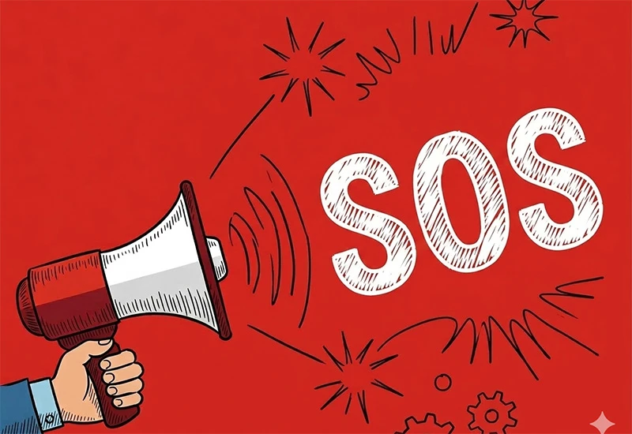

directions_car臺灣本島旅遊：平安出行守則
1. 交通安全與防禦駕駛
-
台灣地形多變且機車密度高,移動安全是旅程的重中之重。
- 都市漫步：過馬路請利用人行道,並留意轉彎車輛的視線死角；切勿在路口滑手機。
- 防禦駕駛：租借機車時請全程配戴安全帽,並與大型車輛保持安全距離,嚴禁併行。
- 山道警示：行經山區道路（如台 9 線、台 14 甲線）請開啟大燈；遇大雨或濃霧時應減速慢行,並留意落石潛勢區標誌。
2. 天然災害應變
- 地震防護：遇地震時請保持冷靜,執行「趴下、掩護、穩住」動作。若在室外,請遠離高大建築與廣告招牌。
- 氣象追蹤：夏季旅遊請密切注意中央氣象署的颱風與豪大雨特報,並隨時調整行程,避免前往山區或溪邊。
3. 戶外與水域活動
- 登山健行：進入管制山區需提前申請入山證,並備妥離線地圖；請評估體能狀況,嚴禁獨自上山。
- 水域禁令：在海灘活動請辨識安全旗號,紅旗代表禁入；戲水請選擇有救生員巡邏的合法區域,避開離岸流。
flight出國旅遊：跨境安全防線
1. 身份文件與領務合規
- 效期檢查：確保護照有效期自回程日起算至少 6 個月以上。
- 文件備份：將護照影本、簽證及保險單據上傳至加密雲端,並隨身攜帶兩張兩吋照片以備不時之需。
- 電子簽證：提前確認目的地的簽證政策,避免因文件不符遭拒絕入境。
2. 醫療風險與保險轉嫁
- 全方位保險：強烈建議投保涵蓋海外突發疾病與旅遊不便險的方案。
- 常備藥品：備妥個人藥方並保留處方箋（英文版）,避免入關時因藥品說明不明引發爭議。
3. 在地法律與文化敏感度
- 尊重禁忌：提前了解當地的宗教信仰與服裝規範（如進入神廟需蓋住肩膀與膝蓋）。
- 法規避雷：注意特定國家的特殊法律,如電子菸禁令、空拍機使用限制或公共場合飲酒規定。
4. 數位財務與資安防護
- 分散風險：採行財物分散策略,將現金與信用卡分放於不同位置。
- 公共網路安全：在機場或飯店連接 Wi-Fi 時,避免操作網路銀行；建議使用 VPN 加密連線 或自備漫遊網路。

warning緊急求助清單
我們建議您將以下號碼存入手機快捷鍵,作為最後的安全防線：- 台灣緊急通訊：警政 110 / 救護 119。
- 行動電話急難救助：若收訊不良,請撥打 112（全球通用）。
- 旅外國人急難救助專線：+886-800-085-095。
- 外交部領事事務局官方 LINE：即時接收旅遊警示資訊。